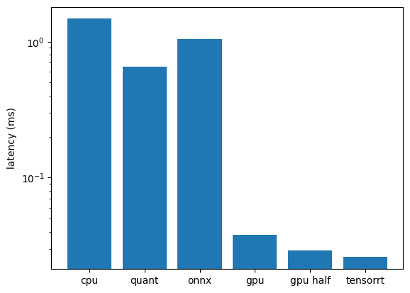

# random colab error: "A UTF-8 locale is required. Got ANSI_X3.4-1968"
# https://github.com/googlecolab/colabtools/issues/3409
import locale
locale.getpreferredencoding = lambda: "UTF-8"follow up post to pytorch quantization … can we make it faster with GPU and TensorRT
get FasterRCNN with a resnet101 backbone same as previous post …
Code
%%capture
import torch
from torchvision.models.resnet import ResNet, Bottleneck, ResNet101_Weights
from torchvision.models._utils import IntermediateLayerGetter
from torchvision.models.detection.backbone_utils import BackboneWithFPN
from torchvision.models.detection.faster_rcnn import FasterRCNN
def resnet_101():
resnet = ResNet(block=Bottleneck, layers=[3, 4, 23, 3])
resnet.load_state_dict(ResNet101_Weights.DEFAULT.get_state_dict(progress=True))
return resnet
resnet = resnet_101()
# same as before, get intermediate layers and their output dimensions
returned_layers = [1, 2, 3, 4]
return_layers = {f"layer{k}": str(v) for v, k in enumerate(returned_layers)}
in_channels_list = []
for k1, m1 in resnet.named_children():
if 'layer' in k1:
in_channels_list.append((m1[-1].bn3.num_features))
rcnn = FasterRCNN(
BackboneWithFPN(
backbone=resnet,
return_layers=return_layers,
in_channels_list=in_channels_list,
out_channels=256,
extra_blocks=None,
norm_layer=None,
),
num_classes=2
)
rcnn.eval()time the RCNN on both CPU and GPU. I don’t recall what the specs were the last time I used colab to profile the inference time so I’ll document that here as well. I’m using a T4 GPU and the following CPU
# !cat /proc/cpuinfo | grep 'name' | uniq
!lscpu | grep 'name'Model name: Intel(R) Xeon(R) CPU @ 2.20GHz!nvidia-smi -LGPU 0: NVIDIA L4 (UUID: GPU-393b8fe1-1ca8-7aaf-94b9-04eef8e2fda5)# random image
image = torch.rand(3, 200, 200)
# put on CPU
rcnn.to(torch.device('cpu'))
image_cpu = image.to(torch.device('cpu'))
with torch.no_grad():
cpu_time = %timeit -o rcnn([image_cpu])1.47 s ± 137 ms per loop (mean ± std. dev. of 7 runs, 1 loop each)from copy import deepcopy
# on GPU
rcnn_gpu = deepcopy(rcnn).to(torch.device('cuda'))
# rcnn.to(torch.device('cuda'))
image_gpu = image.to(torch.device('cuda'))
with torch.no_grad():
gpu_time = %timeit -o rcnn_gpu([image_gpu])37.9 ms ± 235 µs per loop (mean ± std. dev. of 7 runs, 10 loops each)we can also test with half precision…
rcnn_gpu_half = rcnn_gpu.half().to(torch.device('cuda'))
input_half = image_gpu.half()
with torch.no_grad():
gpu_half_time = %timeit -o rcnn_gpu_half([input_half])29.1 ms ± 1.13 ms per loop (mean ± std. dev. of 7 runs, 10 loops each)also re-clock the quantized model using FX Graph Mode since it’s performance is also CPU specific
Code
%%capture
from torch.ao.quantization import quantize_fx
from torch.ao.quantization.qconfig_mapping import get_default_qconfig_mapping
quant_rcnn = deepcopy(rcnn)
qconfig_mapping = get_default_qconfig_mapping("fbgemm") # "qnnpack"
# assume calibrated already
quant_rcnn.eval()
quant_rcnn.to(torch.device('cpu'))
# prepare and quantize
example_input = torch.randn(1, 3, 200, 200)
quant_rcnn.backbone = quantize_fx.prepare_fx(quant_rcnn.backbone, qconfig_mapping, example_input)
quant_rcnn.backbone = quantize_fx.convert_fx(quant_rcnn.backbone)
script_module = torch.jit.script(quant_rcnn)
script_module.save("./quant_rcnn.pt")
quant_rcnn_jit = torch.jit.load("./quant_rcnn.pt", map_location=torch.device('cpu'))
#| code-fold: trueimport warnings
# warmup
with warnings.catch_warnings():
warnings.simplefilter('ignore')
for _ in range(3):
__ = quant_rcnn_jit([image_cpu])
with torch.no_grad():
quant_time = %timeit -o quant_rcnn_jit([image_cpu])652 ms ± 81 ms per loop (mean ± std. dev. of 7 runs, 1 loop each)Below I convert the float model to onnx. I went through onnx because that used to be the preferred way of converting to TensorRT. However, the onnx conversion didn’t play well with the trtexec command line utility for TensorRT regardless of the torch to onnx exporter used. Below the old torch script onnx converter is used but the newer ‘dynamo’ converter also had issues. Thankfully PyTorch has a very easy TensorRT API now, but I keep the ONNX model and evaluate it to see if a simple conversion offers any benefits.
%%capture
!pip install onnx
!pip install onnxruntimeimport onnx
torch.onnx.export(
deepcopy(rcnn),
# onnx wants a tuple of 2 or bombs: https://github.com/zhiqwang/yolort/issues/485
([torch.randn(3, 200, 200)], ),
"rcnn.onnx",
# do_constant_folding=True,
opset_version = 11,
verbose=False
)
# make sure the onnx proto is valid
rcnn_onnx = onnx.load("rcnn.onnx")
onnx.checker.check_model(rcnn_onnx)/usr/local/lib/python3.10/dist-packages/torch/nn/functional.py:4009: UserWarning: To copy construct from a tensor, it is recommended to use sourceTensor.clone().detach() or sourceTensor.clone().detach().requires_grad_(True), rather than torch.tensor(sourceTensor).
(torch.floor((input.size(i + 2).float() * torch.tensor(scale_factors[i], dtype=torch.float32)).float()))
/usr/local/lib/python3.10/dist-packages/torchvision/ops/boxes.py:166: UserWarning: To copy construct from a tensor, it is recommended to use sourceTensor.clone().detach() or sourceTensor.clone().detach().requires_grad_(True), rather than torch.tensor(sourceTensor).
boxes_x = torch.min(boxes_x, torch.tensor(width, dtype=boxes.dtype, device=boxes.device))
/usr/local/lib/python3.10/dist-packages/torchvision/ops/boxes.py:168: UserWarning: To copy construct from a tensor, it is recommended to use sourceTensor.clone().detach() or sourceTensor.clone().detach().requires_grad_(True), rather than torch.tensor(sourceTensor).
boxes_y = torch.min(boxes_y, torch.tensor(height, dtype=boxes.dtype, device=boxes.device))
/usr/local/lib/python3.10/dist-packages/torch/__init__.py:1559: TracerWarning: Converting a tensor to a Python boolean might cause the trace to be incorrect. We can't record the data flow of Python values, so this value will be treated as a constant in the future. This means that the trace might not generalize to other inputs!
assert condition, message
/usr/local/lib/python3.10/dist-packages/torchvision/models/detection/transform.py:308: UserWarning: To copy construct from a tensor, it is recommended to use sourceTensor.clone().detach() or sourceTensor.clone().detach().requires_grad_(True), rather than torch.tensor(sourceTensor).
torch.tensor(s, dtype=torch.float32, device=boxes.device)
/usr/local/lib/python3.10/dist-packages/torchvision/models/detection/transform.py:309: UserWarning: To copy construct from a tensor, it is recommended to use sourceTensor.clone().detach() or sourceTensor.clone().detach().requires_grad_(True), rather than torch.tensor(sourceTensor).
/ torch.tensor(s_orig, dtype=torch.float32, device=boxes.device)
/usr/local/lib/python3.10/dist-packages/torch/onnx/symbolic_opset9.py:5858: UserWarning: Exporting aten::index operator of advanced indexing in opset 11 is achieved by combination of multiple ONNX operators, including Reshape, Transpose, Concat, and Gather. If indices include negative values, the exported graph will produce incorrect results.
warnings.warn(run inference on onnx model, make sure outputs are as expected, then clock-it…
import onnxruntime
import numpy as np
ort_session = onnxruntime.InferenceSession("rcnn.onnx", providers=["CPUExecutionProvider"])
# good to make sure inputs are as expected: '[i.name for i in ort_session.get_inputs()]'
# onnx wants numpy tensor not torch tensor
def to_numpy(tensor):
return tensor.detach().cpu().numpy() if tensor.requires_grad else tensor.cpu().numpy()
# get a prediction. onnx doesn't need a list input like torch model does
ort_inputs = {ort_session.get_inputs()[0].name: to_numpy(image)}
ort_outs = ort_session.run(None, ort_inputs)# onxx outputs are list of three arrays corresponding to 'boxes', 'labels', and 'scores'
print("onnx out shapes: ", [arr.shape for arr in ort_outs])
# quant model out is tuple of (losses, outputs)
torch_outs = __[1][0]
print("torch out shapes: ", [torch_outs[k].shape for k in torch_outs])onnx out shapes: [(100, 4), (100,), (100,)]
torch out shapes: [torch.Size([100, 4]), torch.Size([100]), torch.Size([100])]onnx_time = %timeit -o ort_session.run(None, ort_inputs)
# sess = onnxruntime.InferenceSession('rcnn.onnx', providers=['TensorrtExecutionProvider', 'CUDAExecutionProvider'])
# onnx_trt_time = %timeit -o sess.run(None, ort_inputs)1.05 s ± 114 ms per loop (mean ± std. dev. of 7 runs, 1 loop each)# more steps for using trtexec which has issues with rcnn input shape
# !sudo apt-get install tensorrt
# !pip install tensorrt
# !ls /usr/src/tensorrt/bin # make sure trtexec is there
# !/usr/src/tensorrt/bin/trtexec --onnx=rcnn.onnx --saveEngine=rcnn_engine_pytorch.trtuse the handy torch-tensorrt package…
%%capture
!python -m pip install torch-tensorrt%%capture
device = torch.device("cuda")
rcnn.to(device)import torch_tensorrt
# need to wrap rcnn inputs in list
inputs = [[torch.randn(3, 200, 200).to("cuda")]] # .half()]
trt_model = torch_tensorrt.compile(
deepcopy(rcnn),
ir="torch_compile",
# frontend api below complains about input shape
# backend="torch_tensorrt",
inputs=inputs,
enabled_precisions={torch.float32}, # {torch.half}
debug=True,
workspace_size=20 << 30,
min_block_size=7,
torch_executed_ops={},
)%%capture
# contrary to docs, first run actually compiles model
# https://pytorch.org/TensorRT/tutorials/_rendered_examples/dynamo/torch_compile_resnet_example.html#torch-compile-resnet
outputs = trt_model(*inputs)trt_time = %timeit -o trt_model(*inputs)26.1 ms ± 207 µs per loop (mean ± std. dev. of 7 runs, 10 loops each)import matplotlib.pyplot as plt
fig, ax = plt.subplots()
runtime = [
'cpu',
'quant',
'onnx',
'gpu',
'gpu half',
'tensorrt'
]
latency = [
cpu_time.average,
quant_time.average,
onnx_time.average,
gpu_time.average,
gpu_half_time.average,
trt_time.average
]
latency = [round(n, 3) for n in latency]
ax.bar(runtime, latency)
ax.set_ylabel('latency (ms)')
ax.set_yscale('log')
plt.show()
… half precision on the GPU is nearly as fast as TensorRT.. with TensorRT can also use half-precision to improve latency even more …
Code
# plot latency for all methods (bar chart)